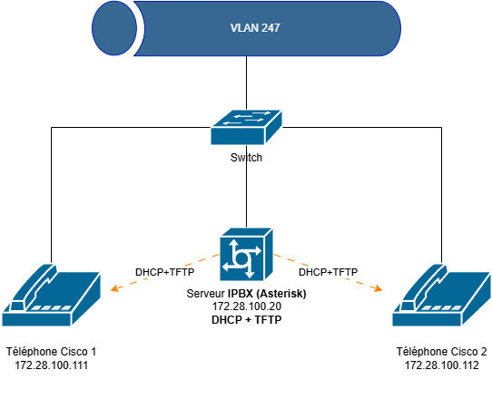

📌 Installation et Configuration d’Asterisk 18.x et Téléphones Cisco¶
Ce guide couvre les étapes nécessaires pour : - Installer Asterisk 18.x sur Debian 12. - Configurer un serveur TFTP et un serveur DHCP pour les téléphones Cisco. - Configurer Asterisk avec sip.conf, extensions.conf et voicemail.conf.
Schéma :¶

🔧 1. Installation d’Asterisk 18.x sur Debian 12¶
1.1 Prérequis¶
Mettez à jour votre système et installez les paquets essentiels :
1.2 Installation des dépendances¶
Asterisk nécessite plusieurs bibliothèques et dépendances :
sudo apt install -y libxml2-dev libncurses5-dev uuid-dev libssl-dev libjansson-dev libedit-dev \
libsqlite3-dev libspandsp-dev libsqlite3-dev libcurl4-openssl-dev libpcap-dev \
libsndfile1-dev libiksemel-dev libasound2-dev
1.3 Téléchargement et compilation d’Asterisk¶
Placez-vous dans /usr/src/ et téléchargez la dernière version d'Asterisk 18 :
cd /usr/src
sudo wget https://downloads.asterisk.org/pub/telephony/asterisk/asterisk-18-current.tar.gz
sudo tar xvf asterisk-18-current.tar.gz
cd asterisk-18*/
Lancez la configuration et préparez la compilation :
Installez les fichiers de configuration et les outils supplémentaires :
1.4 Démarrer Asterisk¶
Démarrez le service et vérifiez son état :
Entrez dans la console d’Asterisk :
Pour activer le démarrage automatique :
📡 2. Mise en place d’un serveur TFTP et DHCP¶
2.1 Configuration DHCP¶
Ajoutez l’option 66 & 67 (TFTP) au WINDOWS serveur DHCP pour indiquer l’adresse du serveur où les téléphones récupéreront leurs fichiers de configuration.
Exemple pour ISC DHCP Server (/etc/dhcp/dhcpd.conf) :
subnet 172.28.100.0 netmask 255.255.255.0 {
range 172.28.100.100 172.28.100.200;
option tftp-server-name "172.28.100.21"; # Adresse IP du serveur TFTP
}
Redémarrez le service :
2.2 Installation et configuration de TFTP¶
Installez et configurez tftpd-hpa :
Éditez /etc/default/tftpd-hpa :
Créez le répertoire TFTP et appliquez les permissions :
sudo mkdir -p /srv/tftp
sudo chown -R tftp:tftp /srv/tftp
sudo chmod -R 777 /srv/tftp
sudo systemctl restart tftpd-hpa
Placez les firmwares des téléphones Cisco dans /srv/tftp/ et redémarrez le service.
📞 3. Configuration des téléphones Cisco¶
Les téléphones Cisco nécessitent un fichier XML pour se configurer. Voici un exemple de fichier XML de configuration pour un téléphone Cisco.
Remarque : De nombreux tutoriels en ligne mentionnent des fichiers
.cnfà la place de.cnf.xml. Dans la pratique, après réinitialisation, ce sont bien les.cnf.xmlqui fonctionnent.
Exemple de fichier de configuration : SEPB8BEBF239674.cnf.xml¶
<?xml version="1.0" encoding="UTF-8"?>
<device>
<deviceProtocol>SIP</deviceProtocol>
<devicePool>
<dateTimeSetting>
<dateTemplate>03/17/2025</dateTemplate>
<timeZone>Eastern Standard/Daylight Time</timeZone>
<ntps>
<ntp>
<name>!!!NTP!!</name>
<ntpMode>Unicast</ntpMode>
</ntp>
</ntps>
</dateTimeSetting>
<callManagerGroup>
<members>
<member priority="0">
<callManager>
<ports>
<ethernetPhonePort>2000</ethernetPhonePort>
<sipPort>5060</sipPort>
</ports>
<processNodeName>!!!ASTERISK!!!</processNodeName>
</callManager>
</member>
</members>
</callManagerGroup>
</devicePool>
<sipProfile>
<sipProxies>
<registerWithProxy>true</registerWithProxy>
</sipProxies>
<sipLines>
<line button="1">
<featureID>9</featureID>
<featureLabel>!!!NOM!!!</featureLabel>
<proxy>USECALLMANAGER</proxy>
<port>5060</port>
<name>!!!NOM!!!1</name>
<displayName>Cisco 7942 - !!!NOM!!!</displayName>
<authName>!!!UTILISATEUR!!!1</authName>
<authPassword>!!!MOTDEPASSE!!!1</authPassword>
<sharedLine>false</sharedLine>
<messageWaitingLampPolicy>1</messageWaitingLampPolicy>
<messagesNumber>*97</messagesNumber>
<ringSettingIdle>4</ringSettingIdle>
<ringSettingActive>5</ringSettingActive>
<contact>2801</contact>
</line>
</sipLines>
<voipControlPort>5060</voipControlPort>
<enableVad>false</enableVad>
<preferredCodec>g711ulaw</preferredCodec>
<dtmfAvtPayload>101</dtmfAvtPayload>
<dtmfDbLevel>3</dtmfDbLevel>
<dtmfOutofBand>avt</dtmfOutofBand>
</sipProfile>
<commonProfile>
<phonePassword></phonePassword>
<backgroundImageAccess>false</backgroundImageAccess>
<callLogBlfEnabled>1</callLogBlfEnabled>
</commonProfile>
<loadInformation>!!!VERSION!!!</loadInformation>
<vendorConfig>
<disableSpeaker>false</disableSpeaker>
<disableSpeakerAndHeadset>false</disableSpeakerAndHeadset>
<pcPort>0</pcPort>
<settingsAccess>1</settingsAccess>
<garp>0</garp>
<voiceVlanAccess>0</voiceVlanAccess>
<videoCapability>0</videoCapability>
<webAccess>0</webAccess>
<webAdmin>1</webAdmin>
<adminPassword>admin</adminPassword>
</vendorConfig>
<versionStamp>1143565489-a3cbf294-7526-4c29-8791-c4fce4ce4c37</versionStamp>
<deviceSecurityMode>1</deviceSecurityMode>
</device>
Dans ce fichier, remplacez :
!!!NTP!!!: l’IP ou FQDN de votre Serveur NTP.!!!ASTERISK!!!: l’IP ou FQDN de votre Serveur Asterisk.!!!NOM!!!: le nom convivial de votre téléphone.!!!UTILISATEUR!!!: l’utilisateur SIP configuré sur Asterisk.!!!MOTDEPASSE!!!: le mot de passe SIP correspondant.!!!VERSION!!!: la version du firmware (exemple :SIP42.9-4-2SR3-1S).
4. Configuration d’Asterisk¶
4.1 Fichier sip.conf¶
Exemple de configuration pour deux postes SIP :
[general]
context=internal ; Contexte par défaut pour les appels entrants
allowguest=no ; Interdire les appels invités
srvlookup=yes ; Recherche DNS pour les serveurs SIP
allow=all ; Permet tous les codecs disponibles
; Réglages de sécurité et d'enregistrement
maxexpiry=3600 ; Durée d'expiration maximum des enregistrements SIP
defaultexpiry=3600 ; Durée d'expiration par défaut des enregistrements
qualify=yes ; Contrôle la qualité de la connexion
; Paramètres de NAT (non utilisés ici car les téléphones sont sur le même réseau)
nat=no ; Pas de NAT
externip=172.28.100.20 ; Adresse IP publique (non utilisée ici)
localnet=172.28.100.0/255.255.255.0 ; Réseau local
; Configuration de l'extension 2801
[2801]
type=friend ; Permet de passer et recevoir des appels
secret=2801 ; Mot de passe pour l'extension 2801
host=dynamic ; Adresse IP dynamique
context=internal ; Contexte pour les appels entrants
disallow=all ; Désactive tous les codecs par défaut
allow=all ; Autorise tous les codecs disponibles
callerid="2801" <2801> ; ID de l'appelant
dtmfmode=rfc2833 ; Mode DTMF
dtmf=rfc2833 ; Gestion des tonalités DTMF
pickupgroup=1 ; Groupe de pickup
; Configuration de l'extension 2802
[2802]
type=friend ; Permet de passer et recevoir des appels
secret=2802 ; Mot de passe pour l'extension 2802
host=dynamic ; Adresse IP dynamique
context=internal ; Contexte pour les appels entrants
disallow=all ; Désactive tous les codecs par défaut
allow=all ; Autorise tous les codecs disponibles
callerid="2802" <2802> ; ID de l'appelant
dtmfmode=rfc2833 ; Mode DTMF
dtmf=rfc2833 ; Gestion des tonalités DTMF
pickupgroup=1 ; Groupe de pickup
4.2 Fichier extensions.conf¶
Dans le contexte [internal], configurez vos postes :
[internal]
; Alias pour numérotation courte
exten => 1,1,Dial(SIP/2801,30,Tt) ; En composant "1", appel à l'extension 2801
exten => 2,1,Dial(SIP/2802,30,Tt) ; En composant "2", appel à l'extension 2802 (nouvelle extension)
; Extension 2801
exten => 2801,1,Answer()
exten => 2801,2,Dial(SIP/2801,60)
exten => 2801,3,Playback(vm-nobodyavail)
exten => 2801,4,VoiceMail(2801@main)
exten => 2801,5,Hangup()
; Extension 2802
exten => 2802,1,Answer()
exten => 2802,2,Dial(SIP/2802,60)
exten => 2802,3,Playback(vm-nobodyavail)
exten => 2802,4,VoiceMail(2802@main)
exten => 2802,5,Hangup()
; Accès à la messagerie vocale pour l'extension 2801
exten => 8001,1,VoicemailMain(2801@main)
exten => 8001,2,Hangup()
; Accès à la messagerie vocale pour l'extension 2802
exten => 8002,1,VoicemailMain(2802@main)
exten => 8002,2,Hangup()
4.3 Fichier voicemail.conf¶
Activez la boîte vocale pour chaque extension :
5. Vérification du Service¶
- Retournez dans la console Asterisk :
- Assurez-vous que le module SIP est chargé :
- Rechargez la configuration :
- Vérifiez la présence de vos téléphones :
Si tout est correct, vous devriez voir vos téléphones 7001 et 7002 apparaître comme Registered. Vous pouvez maintenant passer des appels internes et profiter des fonctionnalités de la messagerie vocale.
Conclusion¶
Vous avez désormais un serveur Asterisk 18.x opérationnel, avec des téléphones Cisco configurés via TFTP/DHCP et les bons fichiers XML. Vous pouvez adapter cette configuration en fonction de vos besoins (ajout d’extensions, mise en place de plans de numérotation avancés, etc.).
Bon déploiement !